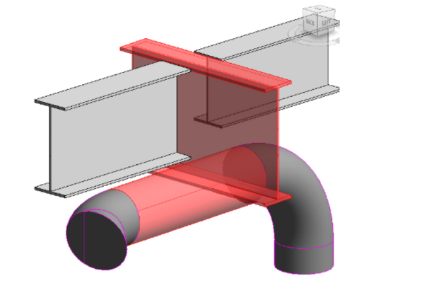

BIM Use: 3D Coordination (Clash Detection)

Coordination
We will use Clash Detection software during the coordination process to determine field conflicts by comparing 3D models of building systems.
The goal of clash detection is to eliminate the major system conflicts prior to installation, moving the "construction" process into the digital environment where mistakes are cheap to fix.
- Coordinate building project through a federated model.
- Reduce and eliminate field conflicts, which reduces RFIs significantly compared to traditional 2D overlay methods.
- Visualize construction sequences and complex junctions.
- Increase productivity on site by reducing rework.
- Reduced construction cost; potentially less cost growth (i.e., fewer change orders).
- Decrease construction time.
- More accurate as-built drawings at project handover.
- Design Authoring Software (e.g., Revit)
- Model Review application (e.g., Navisworks Manage, Solibri, Revizto)
- Issue Tracking Platform (e.g., BIM Track/Newforma)
- Ability to manipulate, navigate, and review a 3D model.
- Strong understanding of how building/facility systems integrate with one another (MEP vs. Structure).
- Proficiency in running interference checks and grouping results.
- Ability to model photo-realistically (for visual validation of exposed services).